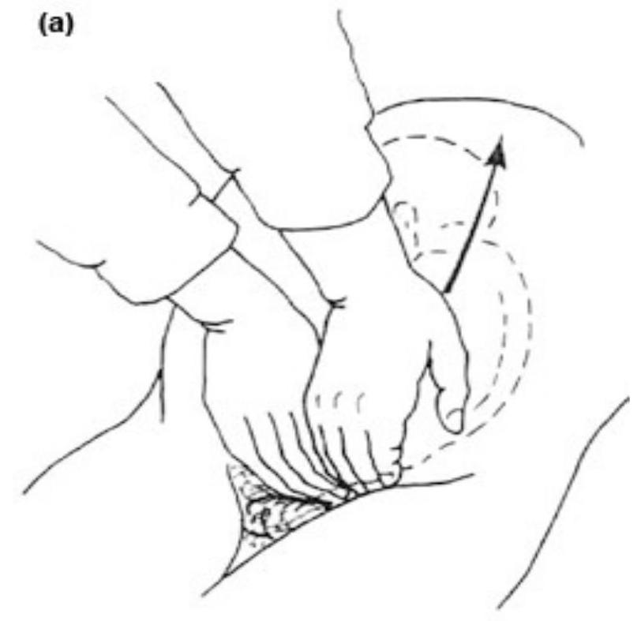
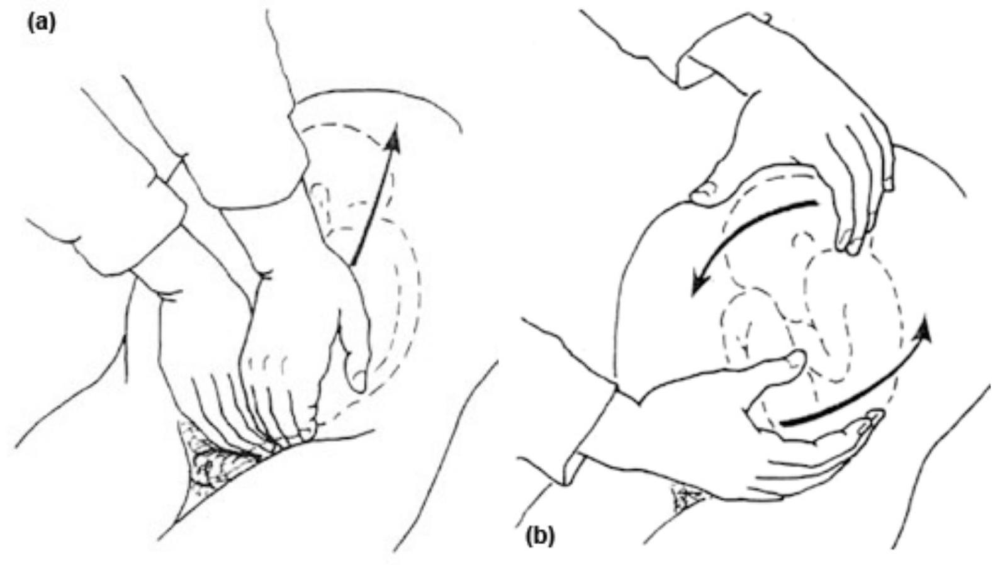

SECTION 1: MULTIPLE PREGNANCIES
Introduction
Multiple pregnancy is a term applied when there is more than one foetus in the uterus. The incidence of multiple pregnancies is rare. It is estimated that twin conception occurs spontaneously once in 90 pregnancies, triplets once in 310,000 while quadruplets occur once in 700,000.
Objectives
By the end of this section you will be able to:
- Define multiple pregnancy
- Explain the two different types of twins
- Diagnose twin pregnancy
- Describe the effect of multiple pregnancy on pregnancy
- Describe the management of multiple pregnancies
Multiple Pregnancies
Varieties of Twins
Twins may be binovular or uniovular. Binovular twins are developed from two separate ova, which may or may not come from the same ovary. Uniovular twins are developed from a single fertilised ovum, which undergoes division to form two embryos. Below is a comparison of the two types of twins.
| Uniovular twin (monozygotic) | Binovular twins (dizygotic) |
|---|---|
| One ovum | Two ova |
| One spermatozoon | Two spermatozoa |
| One amnion | Two amnions |
| One chorion | Two chorions |
| One placenta | Two placentas (may fuse) |
| Same sex | Same or different sexes |
| Identical | May be different in appearance |
Diagnosing a Multiple Pregnancy
On Inspection
- The abdomen looks larger than it should at the given date
- Polyhydramnios may increase the abdominal size leading to confusion of the diagnosis
On Palpation
- Abdominal girth will be 101.5 or more centimetres
- Fundal height is larger than dates from twentieth week of gestation
- You will reveal two foetal poles on fundal palpation
- The size of the head is smaller than the size of the uterus
- You will palpate an unusual number of foetal parts
On Auscultation
- Two foetal hearts are recorded simultaneously and there is a difference of 10 to 20 beats
Ultrasound Scan
An ultrasound scan at seventh week can distinguish two separate sacs while from the twelfth week two foetal bodies can be identified. On the fourteenth week, two heads can be detected. Note: Two skeletons are visible on x-ray at thirty weeks.
Effects of Multiple Pregnancy
The effects of twins on pregnancy include:
- Preeclampsia is three times more common in multiple pregnancies than a single pregnancy
- Anaemia is more common, due to the increased foetal demand of folic acid and iron dietary requirement
- Polyhydramnios could occur due to more fluid in the two foetal sacs
- Pressure symptoms are more marked, and may include backache, oedema, varicose veins, indigestion, constipation, dyspnoea and bladder irritability
- Minor disorders of pregnancy are more marked, including headache, morning sickness and vomiting
- Premature labour is likely, due to over stretching of the uterus
- Congenital malformation occurs twice as much than in single pregnancy
- Intrauterine growth retardation may occur due to placenta insufficiency
Complications of twins in pregnancy include:
- Malpresentation, where 35% of twins will both present by the head, and another 35% by head and breech. 10% present by breech and/or 20% present by transverse lie or cephalic with transverse lie
- Delay in the birth of the second twin
- Cord prolapse, which occurs especially with the second twin, often when there is malpresentation
- Maternal and foetal distress is common due to prolonged labour
- Locked twins is a rare complication but may prevent spontaneous delivery
- Postpartum haemorrhage due to large placental site
Multiple Pregnancy Management
Management During the Antenatal Period
Intensify the care of the mother of twins by ensuring the following:
- See the patient every two weeks from the 20th week
- Check blood haemoglobin levels at 30, 36, 37 weeks before labour to exclude anaemia
- Relieve any discomfort by advising on remedies for minor disorders of pregnancy
- Advise on diet to prevent anaemia
- Advise on the need for at least two hours rest in the afternoon and six to eight hours rest during the night
- The practice of admitting the patient between 30 to 36 weeks is now uncommon. It was necessary where home conditions were poor. It was intended for improving foetal growth through increased placental blood flow following enough rest in the hospital
- Improve maternal nutritional status
- Never allow the pregnancy to go post mature (post date) due to the danger of placenta insufficiency
Management During First Stage of Labour
All cases of multiple pregnancy should be delivered in hospitals due to complications that may occur during labour. The following procedure should be followed:
- Take blood for grouping and cross match
- Avoid over sedating the mother during labour
- Prepare your delivery trolley with pairs of instruments for two babies. You should have a resuscitation trolley, baby labels, ergometrine or syntometrine in a syringe
- Put up the oxytocin drip if uterine action is not proving very effective
- Monitor and assess the progress of labour
- Delivery room must be warm
- Time the episiotomy properly
- Check foetal heart beats between each contraction
- Advise on ambulation if membranes are intact
- Encourage the mother to empty her bladder
- Reassure the mother
- Be friendly and display positive attitudes towards the mother and her family members
Management During Second Stage of Labour
Ensure that the following procedure is followed when managing the second stage of labour:
- It is preferable to have an obstetrician, paediatrician and anaesthetist present during the delivery.
- Preparations should be made for resuscitation and special care in case of low birth weight.
- Operating theatres should be ready to receive a mother at a short notice in case of emergency caesarean section.
- Deliver the head of the first twin slowly, clear the airway and hand the baby to the assistants.
- The assistant should label the baby and write 'first twin' or 'twin one'.
- The lie of the second twin is checked (if longitudinal), then the presenting part is checked. If high, the presenting part is pushed down by fundal pressure and the membranes are ruptured.
- The mother is encouraged to push with each contraction and the baby should be born within 45 minutes.
- Oxytocin can be given immediately after delivery of the anterior shoulder of the second twin. It may also be administered after delivery of the placenta.
- As soon as the oxytocin takes effect, the uterus contracts.
- Both cords are taken simultaneously. The placenta and membranes will be delivered using control cord traction.
Complications in the Delivery of Twins
Management of Delayed Twin
Should you be confronted with a case of a delayed twin, the following steps should be taken:
- Ascertain if the lie is longitudinal.
- Assess the contraction and, if poor, ask your assistant to commence syntocinon drip to stimulate contraction.
- Encourage the mother to push during contraction.
- Vacuum extraction may be done when the doctor comes.
Management When Second Twin Lies in Transverse
You must ensure that you follow this procedure should you be confronted with a case where the second twin is lying in transverse:
- Send for the doctor.
- Attempt external version when the membranes are intact.
- If you succeed in performing the external version, rupture the membranes and encourage the mother to push the baby.
Remember: In case you do not succeed, the doctor will perform an internal version and deliver the baby in breech.
Expulsion of the Placenta or Bleeding Before Second Twin
If the placenta is expelled soon after the first twin or there is bleeding:
- You should deliver the second twin as soon as possible by using fundal pressure in case of longitudinal lie.
- If this is not possible, inform a doctor as soon as possible and prepare the mother for caesarian section.
- Locked twins are very rare. To facilitate the birth of the second twin, decapitation of the first twin is necessary, but caesarean section for delivery of the second twin is the easiest and safest method.
Conjoined Twins
A case of conjoined twins usually requires a cesarean section. At times separation of the conjoined twins is possible.
Version
This is turning the foetus from an undesirable position to a desirable position. The two types of version are external version and pondalic (or internal) version.
External Version
This is the external manipulation of the foetus through the abdomen and the uterine walls, used to correct malpresentation. The procedure is successful when done a month before term. Unfortunately, it is often felt that the foetus returns to its original position after a few hours. This procedure is outdated as caesarean section is recommended in malpresentations. It is now used by a midwife only in the delivery of the second twin in the case of transverse lie. External version is contraindicated in the case of antepartum haemorrhage, high blood pressure, rhesus negative mother, previous scars and twin pregnancy.
Preparation
- Reassure the mother by explaining the procedure
- Make sure the bladder is empty
- The mother lies with partial flexion of the thighs to relax her abdominal muscles
- Sprinkle powder on her abdomen to prevent friction during the movement
- Engage the mother in conversation during the procedure to divert her attention so as to be relaxed. (Some doctors order valium one to two hours before the procedure)
Disengage Breech
The doctor will locate the head and the back and disengage breech by pushing the breech upward with the fingers of both hands. Refer to the diagram on the right.
Make the Foetus do a Forward Somersault
Using steady pressure with one hand press upwards, turn the foetus laterally while the other hand presses on the head displacing it in the direction, which will increase flexion. (Follow the foetus' nose otherwise you will extend the head.)
Post-Version Steps
- Take the foetal heartbeat immediately after the version. For the first few minutes there may be alteration of the heartbeat but it will pick up within a few minutes.
- Observe the mother for three hours.
- If there is no bleeding per vagina, draining of liquor or contraction, advise the mother to report back after one week unless any problem arises.
- If the mother is rhesus negative, anti D should be given within the first 72 hours.
Pondalic Version
This is a manoeuvre designed to change any existing presentation to breech presentation. It is also known as internal version. This manoeuvre is useful in delivery of delayed or transverse second twin. It is now never used in any other circumstances. While the cervical os is fully dilated, the whole hand is introduced high in the uterus. The baby's feet are grasped and pulled in the direction of the birth canal. The other hand helps to turn the foetus by pushing the head up at the fundus. The version is followed by breech extraction.
Care During Puerperium
For the mother with multiple births, involution is usually slow. The after pain is also often more troublesome. Care of the babies can be a major problem, so the mother should be initially helped with the feeding of the babies. Teach the mother how to feed so that she feels competent when discharged. For more detailed information see the section on Care of Normal Puerperium.